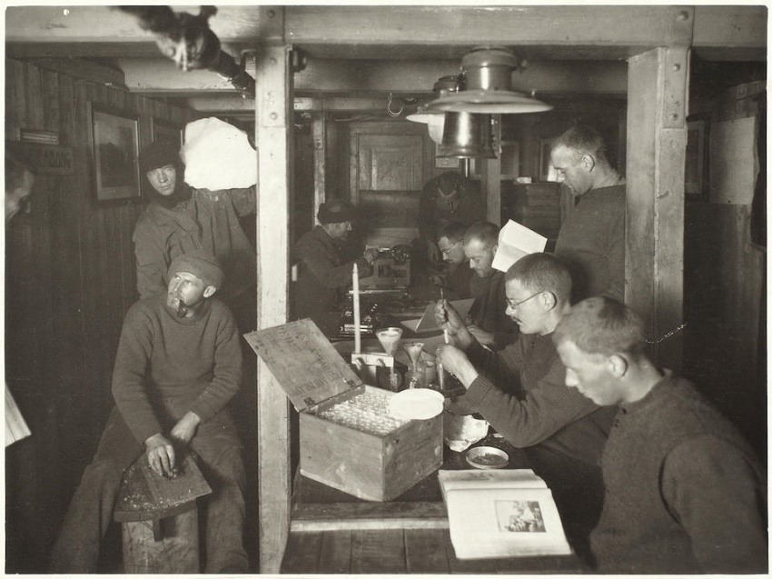

Introduction
It was in 1820 that Lt Edward Bransfield Royal Navy, made the first confirmed sighting of mainland Antarctica.
That first sighting, 200 years ago, was the start of a period of intensive exploration of the Southern Ocean and Antarctica itself.
The late 1800’s and early 1900’s saw the ‘Heroic Age’ of Polar Exploration. Outstanding in their personal contributions to this period, were the British explorers Sir Ernest Shackleton and Sir Robert Falcon Scott.
However, the Heroic age of Polar Exploration had other great contributors from across the globe. Figures such as Roald Amundsen and Douglas Mawson, were instrumental in unlocking the interior of the Antarctic Continent.
Others, like Jean-Baptiste Charcot, who Scott liked, collaborated with and referred to as ‘The Gentleman of the Pole,’ explored the Coast of the Antarctic Peninsula.
Each, in their own way, undertook incredible challenges; seeking to forge into regions that had not been explored before.
As well as their efforts to tread where no one else had stood before, they also contributed immensely to the global pool of scientific knowledge about the Antarctic.
All these individuals displayed the most outstanding levels of resilience, leadership, commitment, endurance, and exceptional vision.
It could be argued that the person who most epitomised these qualities, was Sir Ernest Shackleton or, as he was better known, ‘The Boss’.
The story of Shackleton’s ‘Endurance’ expedition is well known as a tale of the ability of Shackleton and his men to overcome all odds in a battle of heroic survival against the hostile Antarctic environment.
When their ship was crushed by ice in the Weddell Sea in 1915, Shackleton and his men took to hauling their lifeboats across the sea ice in a desperate bid to reach safety.
It is widely regarded that Shackleton’s legendary leadership, coupled with an unbelievable level of trust and commitment from his men,
that enabled Shackleton to guide his team through some of the most extreme hardships imaginable and effect their safe rescue some nine gruelling months later.

Despite the tribulations he suffered, Shackleton returned to the Antarctica in 1921 to lead a further scientific expedition.
Sadly though, Shackleton’s ‘Quest’ Expedition was never to begin in earnest, as he suffered a fatal heart attack on the morning of 5 January 1922.
It was Shackleton's demise that has come to be regarded as the final chapter of the 'Heroic Age of Antarctic Exploration'. It is Shackleton's example that now inspires;
In keeping with the values of the Heroic Age of Antarctic Exploration and Shackleton himself,
Expedition Antarctic Quest 21, will travel into the untrodden regions of the Antarctic Peninsula in order to undertake essential science and exploration activities.
The expedition team will also hold a commemoration Service on the ice on 5th January 2022, in recognition of Shackleton's heroic and historic achievements.
Operating on the Peninsula is no easy task with considerable climatic and environmental challenge.
The only mechanism of movement across the ice is by man-haul and this is very much in the spirit of, and invokes the memory of Shackleton and the Heroic Age of Antarctic Exploration.
Background
In 2012, Paul Hart led a small team to cross the Antarctic Peninsula from West to East and back; undertaking scientific research to commemorate the 100th Anniversary of Captain Scott reaching the South Pole.
Man-hauling loads of more than 110kg, the team braved tremendous storms and the ever-present dangers of crevasse, and avalanche.
Katabatic winds gusting more than 100mph threatened to destroy their tents and took temperatures as low as -55C.
The team also had to deal with the mental impact of continuous falls into the crevasses.
Despite this, for over two and half months they explored un-trodden areas of the Antarctic Peninsula and gained valuable data relating to climate change, geology and meteorology.
Their work was hailed as an outstanding success by such venerable institutions as the British Antarctic Survey, the Scott Polar Research Institute and the National Environmental Research Council.
The purpose
Following on from the success of the 2012 ‘Spirit of Scott’ Expedition,
the intention is now to continue the science and exploration programme on the Antarctic Peninsula by travelling over and then along the spine of the Antarctic Peninsula.
In the 201st Anniversary year of the discovery of Antarctica, the team will cross the Forbidden Plateau from Portal Point to Foyn Point.
At Foyn Point they will put in place and start a GPS data gathering device to measure the movement of the Peninsula bedrock.
This will provide information on how the thickness of the ice covering the rock is changing.
The team will then travel down the spine of the Peninsula and continue their data gathering,
to contribute to the scientific understanding of what is happening on the Peninsula in terms of climate change, meteorology, geology and glaciology;
all things that have a direct impact on the future of our planet and every one of us.
Of special importance will be the teams research into microplastics and metal contamination of the snow on the Peninsula, revealing just how we are affecting Antarctica.
Like earlier pioneers to Antarctica, the team want to inform, educate and inspire the general public on the subject of Antarctica. To these ends there will be a comprehensive
educational outreach programme that will work with schools, universities and the general public to broaden knowledge and understanding about Antarctica.
The team will also conduct a Commemoration Service for Sir Ernest Shackleton on 5 January 2022.
This is will follow the lines of a naval Service based on Shackleton being a member of the Royal Naval Reserve.

Like Shackleton’s final Quest Expedition, which was to undertake science, the Team will conduct the following science projects;
- Gather snow samples from remote locations to measure microplastic contamination
- Take Magnetotelluric measurements to determine the subsurface conductivity and composition of the Peninsula
- Measure UV Radiation levels across the Peninsula to look at Ozone depletion and the impact on bio-mass in the Antarctic waters
- Emplace and set to work a GPS system to measure movement of the Antarctic Peninsula
- Measure snow deposition rates to look at Climatic changes on the Peninsula
- Undertake Meteorological Observations in remote locations to identify changing weather patterns
- Measure metallic contamination of the snow to determine metal fall out into the Southern Ocean and its impact on bio-mass in the water column.
The team
Paul Hart (Lt Cdr RNR)
Polar Maritime Survival Instructor. Led an 8-person team on the first man-haul crossing of the AP, undertaking science work, to commemorate the 100th Anniversary of Captain R.F.
Scott RN reaching the South Pole.
B.Sc in Oceanography & Meteorology. Offshore Medic/ Emergency Medical Technician and Advanced Trauma Life Support Qualified. Alpine Ski Mountaineering Qualified (1996).
Completed Advanced Avalanche Course. Extensive Ski-Touring, Ski-Mountaineering and Ski-Hauling experience. Extensive Arctic operations. Extensive Mountaineering experience including 1st Himalayan ascents.

Antony Jinman (Ex-Able Seaman Survey Recorder)
UIMLA qualified. 12th Briton to Ski to the North and South Pole (unsupported).
Led Queens Diamond Jubilee Expedition to Baffin Island. Extensive Arctic experience. Remote First Aid Qualified. Former Explorer in Residence Plymouth University.

Kate Retallick (Lt Cdr RN)
Greenland crossing 2019, Hardangervidda winter crossing 2018, Svalbard winter ski-crossing 2017. JSAT ML(W) Foundation.
Operations Officer in HMS PROTECTOR for operations in Antarctica 2015-2017. Ice Pilot. 1st Aid Level II. Dartmoor Search & Rescue Team. M.Sc. in Oceanography & Meteorology.
Undertaking Ph.D in Glacial Retreat in Antarctica.

Martin Densham (Lt Cdr RN (Rtd))
Scientific coordinator for crossing of AP in 2012 with Paul Hart. M.Sc in Oceanography & Meteorology.
Sea-ice skiing experience. Mountaineering experience in Europe, Nepal, N. America.

Claire Grogan: Doctor
Greenland crossing 2019, Hardangervidda winter crossing 2018 Svalbard winter ski-crossing 2017. Advanced Wilderness Medicine Instructor. Polar Medicine Instructor.

Mariano Curiel (Argentine)
Polar Guide. IFMGA. Polar Guides Assessor. Operations Officer for Antarctica 21.
Richard Simpson (SSgt Army)
Arctic Ski Survival Instructor, Power and Telecommunications Expert, Advanced Avalanche Qualified.
Operated as Communications expert for the 2012 Spirit of Scott Expedition and undertook multiple Ski-touring activities on the Antarctic Peninsula.

Colonel Paul John Edwards (MBE)
Paul is an avid mountaineer having climbed around the world for over 40 years (He is currently an Honorary Vice President of the Army Mountaineering Association).
Other interests include skiing, sailing and cycling.
In 2012 he led the British Services Antarctic Expedition, taking 24 Service men and women to the Antarctic continent for two months, during the 100th Anniversary of the death of Capt (RN) Robert Falcon Scott,
for which he was awarded the MBE in the New Year’s honours list.

Rickard Berg (Sweden)
Swedish Coastguard. Owner of Twin-Tracks Expeditions. Antarctic operations as Boat Driver since 2012. Winter Survival Instructor.

Richard Simpson (SSgt Army)
Arctic Ski Survival Instructor, Power and Telecommunications Expert, Advanced Avalanche Qualified.
Operated as Communications expert for the 2012 Spirit of Scott Expedition and undertook multiple Ski-touring activities on the Antarctic Peninsula.
Elliot Brown Watches
Our Thanks to Elliot Brown Watches - providers of the toughest watches on the planet.
Polar Latitudes
We’re proud to support the Antarctica Quest 21 Expedition.
When our friend and colleague Paul Hart approached us about sponsoring this critically
important expedition, we didn’t hesitate for a second. But we did have one request: we also
wanted to join and support the effort on the ice. After all, this expedition will be defined by two
things that Polar Latitudes has always been passionate about –a relentless desire to explore and
discover, and a deep respect for the Antarctic environment, as evidenced by our own Citizen
Science program.
The fact that this journey will be building upon the incredible legacy of Sir Ernest Shackleton
was just one more reason we couldn’t say no, as we’ll be launching our own Shackleton’s Final
Quest Voyage (currently waitlisted) this upcoming season.
It’s an honor to support this historic effort, in any and every way we can.
What makes this different?
This isn’t Polar Tourism or a trip based on gratification of the egos of the expedition team.
This expedition is all about giving something back; it is about highlighting the values and the spirit of the heroic pioneers of Antarctic Exploration and in particular Sir Earnest Shackleton.
It is also about undertaking a journey that will allow the team to contribute to the scientific understanding of what is happening in Antarctica and what this means to every one of us.
Finally, it is about extending that knowledge to future generations so that they may also be inspired by the science and adventure of what our forebears have done.
Location Map of Expedition Area: